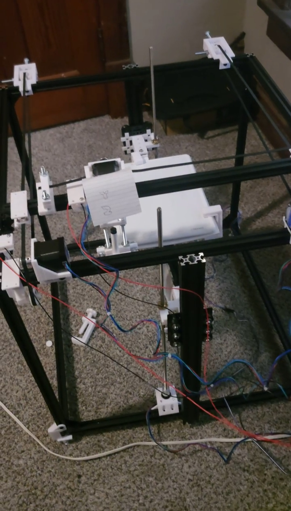
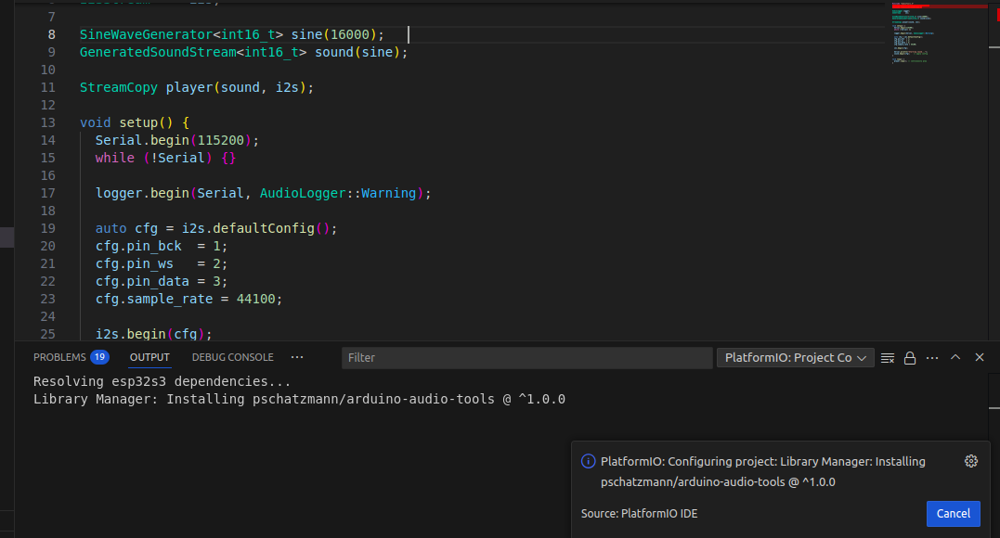
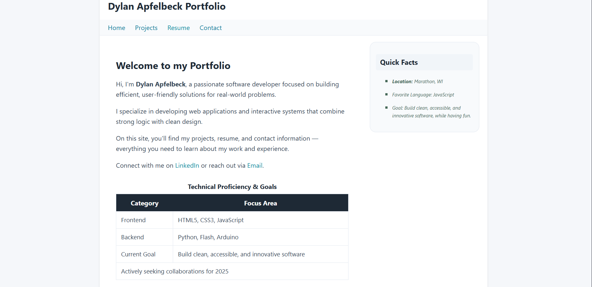

Pen Plotter

The Pen Plotter was my first major dive into the physical world of computing. Using an Arduino
microcontroller and NEMA 17 stepper motors, I built a CNC-style machine capable of drawing
complex vector graphics. This project required a deep understanding of real-time signal
control and precision movement. I spent a significant amount of time calibrating the motor
drivers to ensure smooth motion and accurate reproduction of digital designs. The hardware
was partially 3D printed, which taught me about structural integrity and mechanical prototyping.
This project remains a favorite because it bridges the gap between digital code and tangible
artistic output, as well as being my first project to be completed as a physical object.
Custom Alarm Clock

Built around an ESP32-S3, this custom alarm clock project focused heavily on user interface
design and embedded systems. Unlike a standard clock, this device features a WiFi-enabled
TFT display that pulls real-time data for weather updates. I utilized the TFT_eSPI
library to create a custom graphical interface, which included tactile button navigation
and an IR light sensor for controlling it remotely with a normal TV remote, or a custom made one. Developing the software in the Arduino
IDE allowed me to practice memory management and asynchronous programming to ensure the
clock remained responsive while handling background network requests.
Portfolio Site

This portfolio website itself represents a major milestone in my journey as a web developer.
Designed from the ground up using clean HTML5 and CSS, the site reflects my commitment
to accessible and innovative software. I focused on building a responsive layout that
maintains a professional aesthetic. By
organizing the CSS into a modular external style sheet, I ensured that the site is
easy to maintain and update as my career progresses. This project allowed me to
showcase my branding, technical proficiency in frontend languages, and my ability
to document complex technical work in a way that is clear and visually engaging for
potential collaborators.